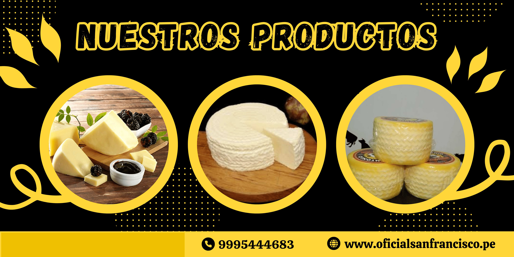

.png)

- 

En 1986, en las tranquilas tierras de Arequipa, Perú, una pareja de esposos visionarios y amantes del queso, Gabriel y Mercedes, creyentes en San Francisco de Asís, decidieron iniciar un negocio que pronto se convertiría en un ícono local: la quesería San Francisco. Ambos provenían de familias dedicadas a la agricultura y la ganadería, lo que les brindó un profundo entendimiento de la calidad de los productos lácteos y un arraigado respeto por las tradiciones culinarias locales. Inspirados por su amor compartido por los quesos artesanales, decidieron poner en práctica sus conocimientos y pasiones para fundar su propia quesería. Desde el principio, Gabriel y Mercedes se comprometieron a producir quesos de la más alta calidad, utilizando métodos tradicionales y cuidando cada etapa del proceso de producción. Con el tiempo, San Francisco se ganó una reputación por ofrecer una variedad exquisita de quesos peruanos e internacionales, cada uno elaborado con leche fresca y ingredientes naturales seleccionados con esmero. El éxito de San Francisco no solo se debió a la calidad de sus productos, sino también a la dedicación de Gabriel y Mercedes por ofrecer un servicio personalizado y una experiencia gastronómica única. Pronto, la quesería se convirtió en un destino popular tanto para lugareños como para turistas que buscaban degustar y adquirir los mejores quesos de la región. Con el paso de los años, San Francisco expandió su negocio no solo en la producción de quesos, sino también en servicios de catering especializados para eventos como bodas, bautizos y celebraciones corporativas. Ofrecían mesas de quesos decoradas con esmero, acompañadas de una selección de embutidos, frutas frescas y deliciosas salsas, todo presentado de manera elegante y profesional. Hoy en día, San Francisco continúa siendo un referente en el mundo de los lácteos en Arequipa y más allá. La pareja fundadora, junto con su familia y un equipo de apasionados colaboradores, continúan llevando adelante la tradición y el compromiso de ofrecer productos de la más alta calidad, consolidando así el legado de la quesería que comenzó como un sueño entre dos corazones enamorados del queso y la excelencia culinaria.